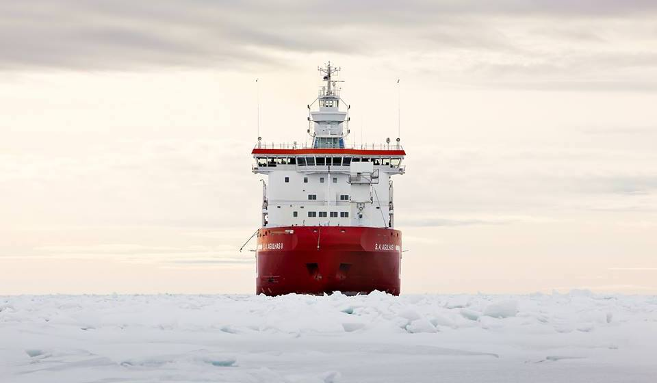
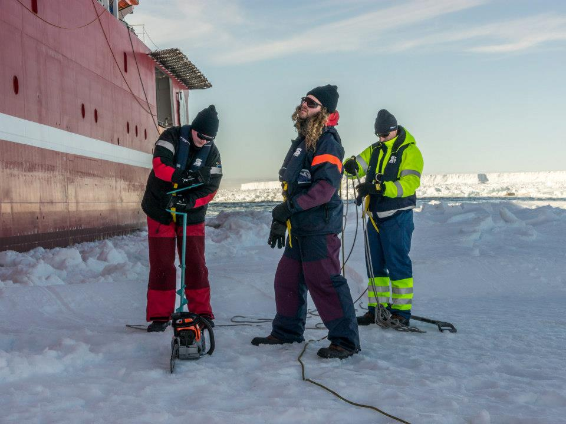
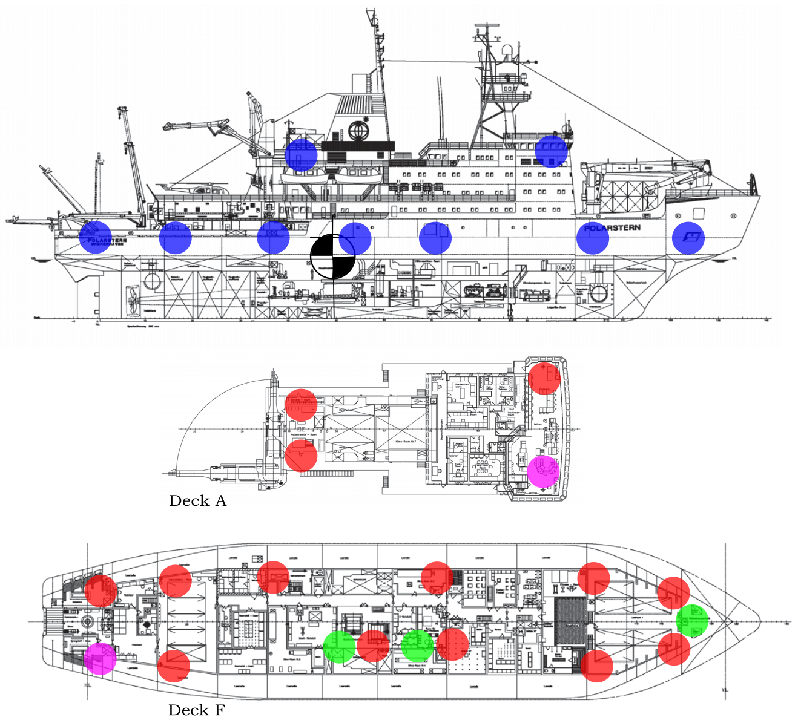
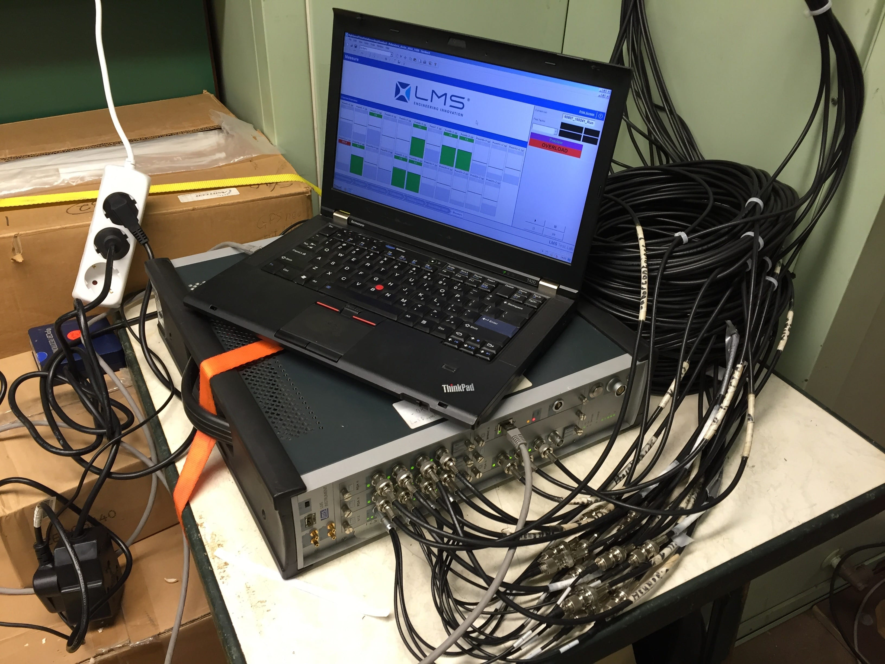
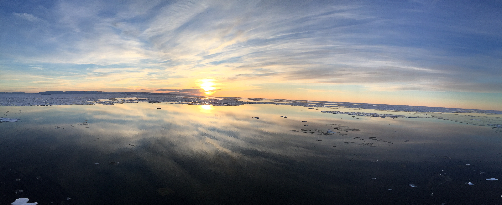

Antarctica 2013-2014
Antarctica 2013-2014My name is Keith Soal and I am currently a PhD student at Stellenbosch University in South Africa. My research topic includes full scale vibration measurements on polar vessels, system identification, automatic modal parameter selection algorithms and inverse force estimation using Kalman filters.
During my PhD I have conducted measurements on the South African research vessel SA Agulhas II in Antarctica as well as the German research vessel Polarstern in the Arctic. I have been based mainly in Germany at the Technische Hochschule Ingolstadt with research exchanges to Aalto University in Helsinki, Finland, the Deutsches Zentrum für Luft und Raumfahrt DLR (German aerospace centre) in Göttingen, Germany and the Instituto Superior Técnico in Lisboa, Portugal.
Antarctica 2013-2014
 Arctic 2016
Arctic 2016
 Antarctica 2015-2016
Antarctica 2015-2016
 Polarstern - German Research Vessel
Polarstern - German Research Vessel
SA Agulhas II - South African Research Vessel
Ice Sampling
Polarstern Measurement Setup
Data Aquisition System and Measurement Laptop
 Polarstern in the Arctic
Polarstern in the Arctic
Greenland Sunset/Sunrise
 SA Agulhas II in Heavy Pack Ice
SA Agulhas II in Heavy Pack Ice
 Antarctica Surreal
Antarctica Surreal
 Antarctic Ice Shelf
Antarctic Ice Shelf
 Table Mountain - Cape Town
Table Mountain - Cape Town
 home - Polarstern
home - Polarstern
 Unchartered waters - Greenland
Unchartered waters - Greenland